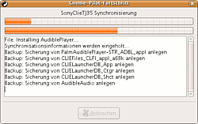
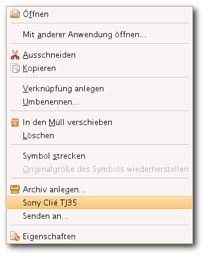

gnome-pilot
Archivierte Anleitung
Dieser Artikel wurde archiviert, da er - oder Teile daraus - nur noch unter einer älteren Ubuntu-Version nutzbar ist. Diese Anleitung wird vom Wiki-Team weder auf Richtigkeit überprüft noch anderweitig gepflegt. Zusätzlich wurde der Artikel für weitere Änderungen gesperrt.
Anmerkung: gnome-pilot ist nur bis Ubuntu 11.04 in den Paketquelle.
Zum Verständnis dieses Artikels sind folgende Seiten hilfreich:
Für den GNOME-Desktop gibt es ein unscheinbares Tool, das alle Anforderungen an eine Desktop-Software erfüllt. Bei gnome-pilot handelt es sich um ein Applet für das GNOME-Panel. Es ermöglicht die Synchronisation mit Evolution und unterstützt den Dateitransfer verschiedener Formate auf den PDA.
Installation¶
Hinweis:
Gnome-pilot ist nur bis Ubuntu 11.04 in den Paketquellen enthalten.
Folgende Pakete müssen installiert [1] sein (bei einer Standard-Installation ist dies bereits der Fall):
gnome-pilot
gnome-pilot-conduits
 mit apturl
mit apturl
Paketliste zum Kopieren:
sudo apt-get install gnome-pilot gnome-pilot-conduits
sudo aptitude install gnome-pilot gnome-pilot-conduits
Applet¶

Das Applet wird mit "Rechtsklick -> Zum Panel hinzufügen -> Pilot Applet" auf das gewünschte Panel gelegt.
Wurde noch kein PDA eingerichtet, startet der Einrichtungsassistent. Dieser ist auch über das GNOME-Menü unter "System -> Einstellungen -> PalmOS-Gerät" erreichbar.
Nach der erfolgreichen Einrichtung kann man die gewünschten Synchronisationsoptionen der Conduits einstellen und durch Aktivieren des Hotsyncs den Vorgang starten. Das Benachrichtigungsfenster zeigt den Fortschritt der Synchronisation an.
Hinweis:
Status¶
Das Applet zeigt durch verschiedenfarbige Anzeigen den jeweiligen Zustand an:
| Status | |
| PDA wurde erfolgreich eingerichtet und ist synchronisationsbereit. | |
 | PDA wurde noch nicht oder nicht erfolgreich eingerichtet, eine Synchronisation ist nicht möglich. |
| PDA wird gerade synchronisiert. | |
| Dämon wurde unterbrochen. | |
Dateitransfer¶
Gnome-pilot kann man auf zwei Arten für den Dateitransfer nutzen:
Drag and Drop¶
Nach erfolgter Aktivierung des File-Conduits kann die entsprechende Datei datei.prc bzw. datei.pdb einfach per Drag and Drop auf das Pilot-Applet gezogen werden. Bei der nächsten Synchronisation wird die Datei automatisch installiert.
Terminal¶
Mit folgenden Befehlen können .prc und .pdb Dateien über das Terminal installiert werden.
gpilot-install-file --now programm.prc gpilot-install-file --later programm.prc
Wird die Option --now verwendet, erscheint eine Aufforderung zur Aktivierung des Hotsyncs. Bei der Verwendung von --later wird die der Transfer für die nächste Synchronisation vorgemerkt.

Nautilus¶
Unter Nutzung von Nautilus-Actions kann man diesen Befehl in das Kontextmenü integrieren. Folgendes Paket muss installiert [1] werden:
nautilus-actions (universe [2])
mit apturl
Paketliste zum Kopieren:
sudo apt-get install nautilus-actions
sudo aptitude install nautilus-actions
Die Aktionen können nun unter "System -> Einstellungen -> Nautilus-Aktionen" erstellt werden. Hier "Hinzufügen" auswählen.
Im Fenster folgende Eintragungen vornehmen:
Beschriftung: Modell z.B.
Sony Clié TJ35Kurztipp:
HotsyncPfad:
gpilot-install-file --now(sofortige Installation;--laterfür spätere Installation)Parameter:
%MFilenames:
*.prc ; *.pdb"OK"
Befindet sich in einem Verzeichnis von Nautilus ein oder mehrere Palm-Programme, wählt man diese und danach per "Rechsklick" die gewünschte Aktion aus. Man kann je eine Aktion für die sofortige (--now) und eine spätere (--later) Installation anlegen.
Konqueror¶
Unter KDE lassen sich Palm-Dateien ebenfalls recht komfortabel installieren. Dazu muss zuerst der Konqueror geöffnet werden, dann:
"Einstellungen -> Konqueror einrichten -> Dateizuordnungen" auswählen
Unter "Dateimuster suchen" nach den .prc-Dateien suchen lassen, gegebenenfalls müssen noch diese angelegt werden.
Unter "Rangfolge der zugeordneten Anwendungsprogramme" einen neuen Eintrag definieren, das benutzte Programm ist unerheblich, da nur der gnome-pilot-Befehl benutzt werden wird.
Jetzt "bearbeiten -> Programm" auswählen, dort soll im entsprechenden Feld der Befehl
gpilot-install-file --now %Ueingegeben werden.Eingaben übernehmen, wenn alles glatt gegangen ist, reicht es ab jetzt aus, wenn ein Palm-Programm "ausgeführt" wird. Es muss nur noch der Hotsync-Knopf gedrückt werden.

- Erstellt mit Inyoka
-
 2004 – 2017 ubuntuusers.de • Einige Rechte vorbehalten
2004 – 2017 ubuntuusers.de • Einige Rechte vorbehalten
Lizenz • Kontakt • Datenschutz • Impressum • Serverstatus -
Serverhousing gespendet von